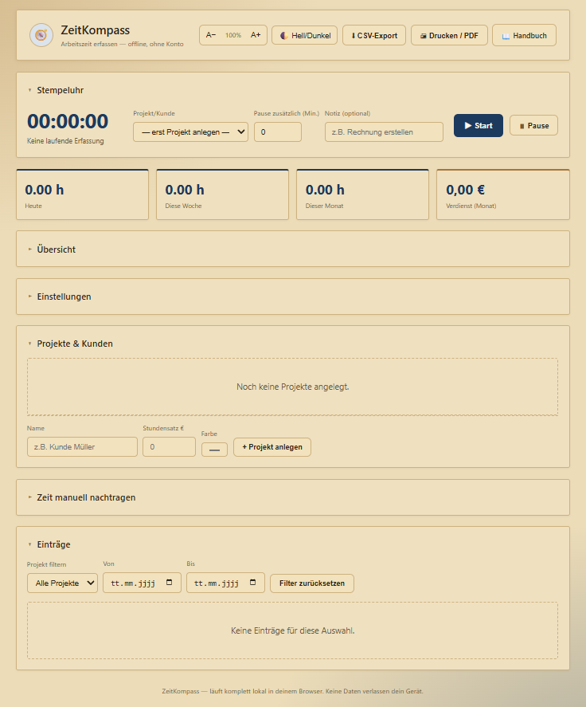

ZeitKompass
Stempeluhr starten, Projekt wählen, fertig — ZeitKompass berechnet Dauer, Pausen und Verdienst automatisch für mehrere Kunden oder Projekte. Läuft komplett offline im Browser, installierbar als App.
🎁 Komplett kostenlos — kein Konto, kein Abo

∞
Projekte/Kunden
4
Zeiträume: Tage/Wochen/Monate/Jahre
0€
Kostenlos, kein Abo
Alles drin fürs Abrechnen
- Stempeluhr mit Halten-zum-StoppenEine Sekunde gedrückt halten zum Beenden — schützt vor versehentlichem Wegklicken, inklusive Rückgängig-Hinweis.
- Projekte & Kunden mit StundensatzBeliebig viele Projekte anlegen, Verdienst wird automatisch berechnet.
- Pause doppelt erfassbarLive-Pause-Button während der Erfassung plus ein zusätzliches Minutenfeld — beide addieren sich.
- Rundung & Statistik-DiagrammArbeitszeit auf 5/10/15 Minuten runden, Balkendiagramm nach Tagen, Wochen, Monaten oder Jahren.
- CSV-Export & Drucken/PDFAlle Einträge als Tabelle exportieren oder als saubere Zeitübersicht mit Summen ausdrucken.
- Kein Konto, kein TrackingKeine Anmeldung, keine Cloud, keine Werbung. Alles bleibt lokal auf dem Gerät.
🎁 Jetzt kostenlos nutzen
Läuft direkt im Browser, installierbar als App · Handbuch ansehen